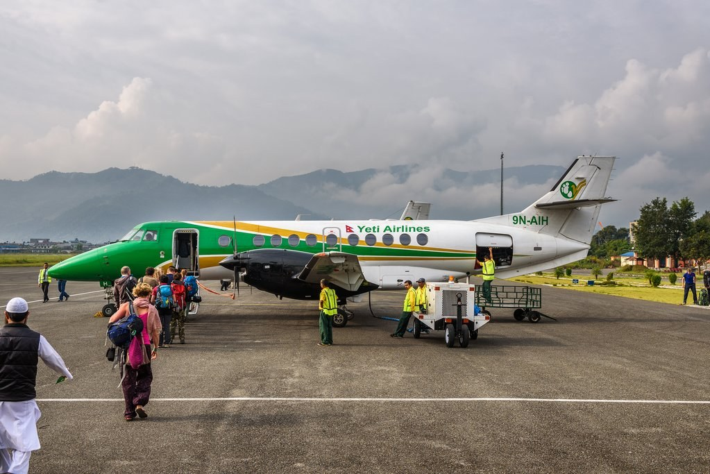
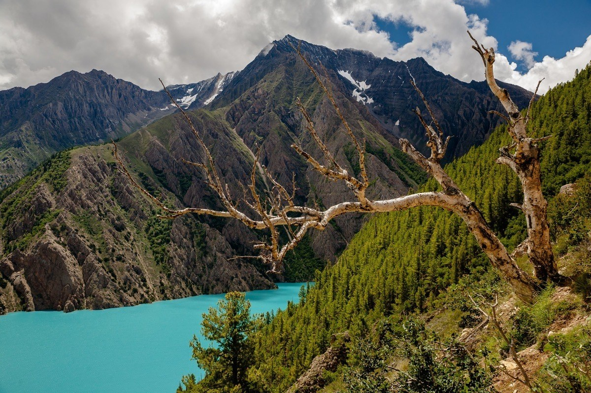
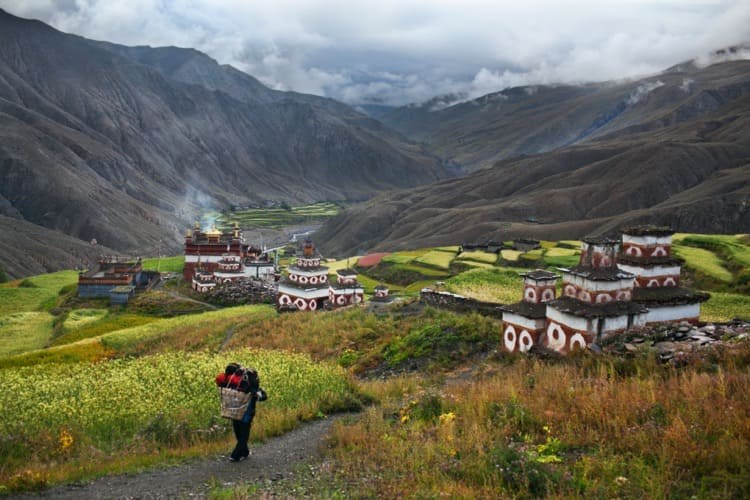
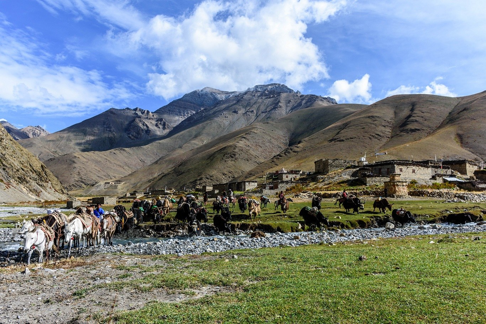

Lower Dolpo trek - 18 Days
The Lower Dolpo Trek is one of the most fascinating off-the-beaten-path trekking experiences in Nepal, taking adventurous travelers deep into the remote landscapes of western Nepal. Far from the busy trails of the Everest Region Trekking and Annapurna Region Trekking, Lower Dolpo offers a quieter Himalayan experience surrounded by dramatic mountains, deep valleys, ancient villages, Buddhist monasteries, forests, and the spectacular turquoise waters of Phoksundo Lake.





Key Trip Facts
Trek Overview
Trip Highlights
Lower Dolpo Trek Overview
The Lower Dolpo Trek is one of the most fascinating off-the-beaten-path trekking experiences in Nepal, taking adventurous travelers deep into the remote landscapes of western Nepal. Far from the busy trails of the Everest Region Trekking and Annapurna Region Trekking, Lower Dolpo offers a quieter Himalayan experience surrounded by dramatic mountains, deep valleys, ancient villages, Buddhist monasteries, forests, and the spectacular turquoise waters of Phoksundo Lake.
Located within and around Shey-Phoksundo National Park, the trek combines rugged Himalayan scenery with the distinctive culture and traditions of the Dolpo region. The Nepal Tourism Board lists trekking and mountaineering among the park's activities and highlights Phoksundo Lake, traditional villages, monasteries, and the area's rich wildlife and biodiversity.
For travelers looking beyond the classic routes, Lower Dolpo is an excellent choice for trekking in Nepal. It provides a genuine wilderness experience where the journey itself is as important as the destination.
A Journey into Remote Western Nepal
- Lower Dolpo is different from the more developed trekking destinations of Nepal. Trails are quieter, settlements are scattered, and much of the journey passes through remote mountain terrain. The landscape changes dramatically as the trail moves from lower forested valleys toward high alpine terrain.
- A typical Lower Dolpo adventure can include spectacular views of the Himalayan range, pine and juniper forests, rugged cliffs, traditional villages, Buddhist cultural sites, and the unforgettable Phoksundo Lake.
- The region is also known for its diverse wildlife. Shey-Phoksundo National Park is home to species including Himalayan tahr, musk deer, Himalayan black bear, blue sheep, ghoral, marmot, and other Himalayan wildlife. The park also records more than 200 species of birds.
Phoksundo Lake, The Highlight of Lower Dolpo
- One of the greatest attractions of the Lower Dolpo Trek is Phoksundo Lake, famous for its striking blue and turquoise colors and spectacular mountain surroundings.
- The journey to the lake passes through dramatic Himalayan scenery before reaching the traditional settlement of Ringmo and the shores of Phoksundo. The combination of the lake, surrounding cliffs, waterfalls, forests, and traditional architecture creates one of the most memorable landscapes in Nepal.
- For photographers, nature lovers, hikers, and travelers searching for something beyond conventional Himalayan routes, Phoksundo is a major reason to explore Lower Dolpo.
Culture and Traditional Himalayan Life
- Lower Dolpo is not only a mountain adventure; it is also a cultural journey. The region preserves traditional Himalayan lifestyles influenced by Tibetan Buddhism and centuries-old mountain traditions.
- Travelers may encounter traditional villages, Buddhist monasteries, prayer flags, mani walls, chortens, and local communities whose lives remain closely connected to the mountains.
- Compared with heavily visited destinations, the remote nature of Dolpo provides a more intimate opportunity to observe traditional Himalayan culture while traveling responsibly and respectfully.
Trekking in Nepal Beyond the Popular Routes
Nepal is internationally known for destinations such as Everest Region Trekking, Annapurna Region Trekking, Manaslu Circuit Trek, and Mustang Region Trekking. These areas offer spectacular scenery and well-established trekking routes.
Lower Dolpo provides a different experience.
While Everest is famous for its legendary mountain scenery and base camp, Annapurna offers extraordinary landscape diversity, and Manaslu combines dramatic mountains with cultural encounters, Dolpo is particularly attractive to travelers looking for remote trekking in Nepal, wilderness, solitude, and traditional Himalayan communities.
This makes Lower Dolpo an excellent option for experienced hikers who want to explore a less-commercialized side of the country.
Hiking in Nepal: What Makes Lower Dolpo Special?
- For people interested in hiking in Nepal, Lower Dolpo offers more than a simple mountain walk. The trail involves long walking days, significant elevation changes, rugged paths, river crossings, and remote camping areas.
- The trek rewards physical effort with extraordinary scenery and a strong sense of wilderness.
- Unlike short hiking routes around Kathmandu or Pokhara, Lower Dolpo requires careful preparation and logistical planning. Trekkers should be prepared for changing weather, limited facilities, remote locations, and high-altitude conditions.
- A professional trekking guide can make a significant difference by assisting with navigation, accommodation or camping arrangements, local communication, safety, and daily trekking logistics.
Lower Dolpo trek - 18 Days Itinerary: Day by Day
18 Days program for Lower Dolpo trek - 18 Days. Daily timings and sequences remain flexible according to weather, flight operations, and group pace.
Day 1: Arrival in Kathmandu (1,400m/4,593ft)
Approx. 1,400 m / 4,593 ft
Upon arrival at Tribhuvan International Airport, a Nepal Unique Treks representative will greet you and transfer you to your hotel in Kathmandu. Depending on your arrival time, take the rest of the day to relax, recover from jet lag, or explore the lively streets of Thamel. In the evening, join your guide for a welcome dinner and a briefing covering the trek route, packing essentials, and what to expect in the restricted Dolpo region.
Day 2: Lower Dolpo Trek Permit Preparation and Kathmandu Sightseeing
Approx. 1,400 m / 4,593 ft
Since Dolpo is a restricted area, today is dedicated to finalizing your special trekking permit and Shey Phoksundo National Park entry permit both require processing time and original passport documents. While our team handles the paperwork, enjoy a guided sightseeing tour of Kathmandu's UNESCO World Heritage Sites, such as Swayambhunath (Monkey Temple), Pashupatinath Temple, and Boudhanath Stupa. In the afternoon, do a final gear check and pack for the trek.
Day 3: Flight from Kathmandu (1,400m/4,593ft) to Nepalgunj (150m/492ft)
Approx. 150 m / 492 ft
A short domestic flight (approx. 1 hour) takes you from the hills of Kathmandu down to the subtropical lowlands of Nepalgunj, near the Indian border. This overnight stop positions you for the early morning mountain flight to Dolpo. The drop in altitude and rise in temperature is noticeable a good chance to rest before the trek begins.
Day 4: Flight from Nepalgunj (150m/492ft) to Juphal (2,502m/8,208ft), then Trek to Dunai (2,850m/9,350ft)
Approx. 2,850 m / 9,350 ft
An early, scenic mountain flight (around 45 minutes) brings you into Juphal, the gateway airstrip to Dolpo, with views of the Dhaulagiri range along the way. From Juphal, begin trekking on a gently descending trail through terraced fields and pine forest along the Bheri River to Dunai, the district headquarters of Dolpo. Trekking time: approx. 2–3 hours.
Day 5: Trek from Dunai (2,850m/9,350ft) to Tarakot (2,543m/8,343ft)
Approx. 2,543 m / 8,343 ft
The trail follows the Bheri River valley westward, passing through small settlements, farmland, and forested sections before reaching Tarakot, home to the historic Sandul Gompa and old fort ruins overlooking the valley. Trekking time: approx. 5–6 hours.
Day 6: Trek from Tarakot (2,543m/8,343ft) to Laini (3,160m/10,367ft)
Approx. 3,160 m / 10,367 ft
Today's trail turns north along the Tarap Khola gorge, crossing suspension bridges and narrow cliffside paths through a dramatic, narrowing valley. The scenery becomes progressively wilder and more remote as you gain elevation toward Laini. Trekking time: approx. 6–7 hours.
Day 7: Trek from Laini (3,160m/10,367ft) to Nawarpani (3,545m/11,630ft)
Approx. 3,545 m / 11,631 ft
Continue following the Tarap Khola upstream through a steep, forested gorge. This section includes several stream crossings and narrow trail sections cut into cliffs one of the more adventurous stretches of the trek. Nawarpani offers a peaceful riverside camp. Trekking time: approx. 5 hours.
Day 8: Trek from Nawarpani (3,545m/11,630ft) to Dho Tarap (4,090m/13,418ft)
Approx. 4,090 m / 13,419 ft
The valley gradually opens up as you leave the gorge behind and enter the high, arid Tarap Valley, your first real taste of Dolpo's trans-Himalayan, Tibetan-style landscape. Dho Tarap is a fascinating settlement inhabited by both Tibetan Buddhist and Bon-po communities, with chortens, prayer flags, and traditional stone houses. Trekking time: approx. 6–7 hours.
Day 9: Acclimatization Day in Dho Tarap (4,090m/13,418ft)
Approx. 4,090 m / 13,419 ft
A rest day built in for safe acclimatization before heading higher. Use the day to explore Dho Tarap's Bon and Buddhist gompas, meet local Dolpo-pa herders, and take an optional short acclimatization hike onto the surrounding ridges for mountain views. This is an important day for adjusting to the thinning air before the high passes ahead.
Day 10: Trek from Dho Tarap (4,090m/13,418ft) to Numa La Base Camp (4,440m/14,566ft)
Approx. 4,470 m / 14,665 ft
Leaving Dho Tarap, the trail climbs steadily through open, high-altitude grazing pastures where you may spot herds of yak and blue sheep. The landscape becomes increasingly barren and mountainous as you approach the base camp beneath Numa La. Trekking time: approx. 6–7 hours.
Day 11: Trek from Numa La Base Camp (4,440m/14,566ft) to Penung Tang (4,465m/14,648ft) via Numa La Pass (5,190m/17,027ft)
Approx. 5,190 m / 17,028 ft
One of the toughest and most rewarding days of the trek. A steep, sustained climb leads to the top of Numa La, the trek's high point, where sweeping panoramas of Mt. Dhaulagiri, Norbung Kang, and Churen Himal unfold across the barren Dolpo landscape. After time at the summit for photos, descend along the Gyambo Khola to camp at Penung Tang. Trekking time: approx. 6–7 hours.
Day 12: Trek from Penung Tang (4,465m/14,648ft) to Dajok Tang (4,080m/13,385ft) via Baga La Pass (5,070m/16,633ft)
Approx. 5,070 m / 16,634 ft
A second high-altitude crossing, Baga La rewards climbers with stunning views of Mt. Kanjiroba and the surrounding snow peaks. From the pass, the trail descends into greener terrain, gradually easing as you approach Dajok Tang. Trekking time: approx. 6 hours.
Day 13: Trek from Dajok Tang (4,080m/13,385ft) to Ringmo (3,600m/11,811ft)
Approx. 3,600 m / 11,811 ft
A comparatively shorter and easier day, descending through pine, cypress, and juniper forest with views of dramatic cliffs and waterfalls. Ringmo is a traditional Bon-po village and the gateway to Phoksundo Lake. Trekking time: approx. 3–4 hours.
Day 14: Trek from Ringmo (3,600m/11,811ft) to Phoksundo Lake (3,611m/11,847ft)
Approx. 3,611 m / 11,847 ft
A short, gentle day exploring the area around the stunning turquoise waters of Phoksundo Lake, Nepal's deepest lake and the centerpiece of Shey Phoksundo National Park. Visit the lakeshore, the dramatic Phoksundo waterfall (one of Nepal's highest), and the ancient Bon monastery above Ringmo village.
Day 15: Trek from Phoksundo Lake (3,611m/11,847ft) to Shyanta (2,520m/8,267ft)
Approx. 2,520 m / 8,268 ft
Begin the return journey, descending along the Phoksundo Khola through changing vegetation zones from alpine terrain back into pine and fir forest with the trail hugging dramatic river gorges and cliffs. Trekking time: approx. 5–6 hours.
Day 16: Trek from Shyanta (2,520m/8,267ft) to Juphal (2,320m/7,611ft)
Approx. 2,320 m / 7,612 ft
The final trekking day follows the Suli Gad and Bheri river valleys back through familiar lower-altitude villages and terraced farmland to Juphal, completing the loop back to the airstrip. Trekking time: approx. 4–5 hours.
Day 17: Flight from Juphal (2,320m/7,611ft) to Nepalgunj (150m/492ft), then Kathmandu (1,400m/4,593ft)
Approx. 1,400 m / 4,593 ft
An early morning flight takes you from Juphal back to Nepalgunj, connecting onward the same day to Kathmandu. Enjoy a hot shower, a good meal, and some well-earned rest back in the capital. A farewell dinner in the evening is a great way to celebrate the completed trek.
Day 18: Final Departure
Approx. 1,400 m / 4,593 ft
Depending on your international flight schedule, enjoy some free time for last-minute shopping in Thamel or relaxation before our representative transfers you to Tribhuvan International Airport for your departure flight.
What is Included (Regular Package)
What is Excluded
Booking Dates & Availability
Packing List for Lower Dolpo trek - 18 Days
Tents, kitchen equipment, dining crew, and porters are handled by our logistics team on restricted/remote camping routes.Expedition Duffel & Trail Hardware (5 items)
Severe Weather Apparel (4 items)
Camping Comfort & Power (3 items)
Read before you book: Lower Dolpo trek - 18 Days
Practical logistics derived directly from this package's route facts, inclusions, and elevation profile.
Accommodation & Meals (Hotel, Lodge and Camp)
Accommodation follows the package grade (Hotel, Lodge and Camp) in Kathmandu and along the Off The Beaten Trails route. Check your package Includes section for included meals and Kathmandu hotel nights.
Permits & Local Logistics
Transportation is arranged via Flight, Jeep. Applicable permits listed in the package inclusions are arranged by Nepal Unique Treks prior to departure.
Route Difficulty & Elevation (5190 m)
Lower Dolpo trek - 18 Days is rated Adventurous with a maximum elevation of 5190 m. Follow your guide's pacing and stay hydrated throughout the 18 Days itinerary.
Best Time to Visit (Autumn and Spring)
Recommended operating season on the source page: Autumn and Spring. Additional official notes from the source page follow below.
Traveller Useful Information
Choosing the right season is particularly important for a remote trek such as Lower Dolpo.
The Nepal Tourism Board identifies March to May and September to October as the best seasons for visiting Shey-Phoksundo National Park.
Spring – March to May
Spring brings warmer temperatures, improving trail conditions, and fresh vegetation. It is a beautiful period for trekking through forests and alpine landscapes.
Autumn – September to October
Autumn generally provides clear Himalayan views following the monsoon period and is one of the most popular periods for trekking in Nepal.
Summer and Monsoon
Weather conditions can affect access and trail conditions, particularly on lower approaches. River levels and rainfall can make some sections more challenging, so current conditions should be considered before departure.
Winter Season
Winter brings freezing temperatures and the possibility of snow at higher elevations. Trekkers considering Lower Dolpo during colder months need to be particularly well prepared.
Therefore, when researching the best time to do trek in Nepal, the ideal season depends on the specific region and route. Lower Dolpo is best planned around suitable weather and current trail conditions rather than applying the same trekking season to every part of Nepal.
- The Lower Dolpo Trek is considered a demanding Himalayan trekking adventure. It is more suitable for trekkers who have previous multi-day trekking experience or who are adequately prepared for long days in remote mountain environments.
- The difficulty comes not only from altitude but also from the remoteness of the region, rugged trails, limited infrastructure, and changing mountain weather.
- Proper acclimatization, physical preparation, suitable equipment, travel insurance, and experienced support staff are important elements of a safe and enjoyable journey.
- The Department of National Parks and Wildlife Conservation also emphasizes the importance of taking altitude sickness seriously and descending when symptoms persist or worsen.
- Lower Dolpo falls within Nepal's regulated trekking areas, so the necessary permits should be arranged before beginning the trek.
- According to the current Department of Immigration information, the Lower Dolpa trekking permit is USD 10 per person per week. The application requires documentation from a licensed trekking agency, along with trekking-program and trekker information and other required documents.
- Permit regulations can change, so trekkers should always confirm the latest requirements before traveling.
Organizing a remote Himalayan trek is very different from booking a standard sightseeing tour. Transportation, permits, guides, porters, accommodation, camping equipment, food supplies, domestic flights, weather conditions, and emergency planning all need to be considered.
Working with a Local Trekking Agency in Nepal gives travelers access to local experience and practical knowledge of trekking conditions.
A reliable agency can arrange:
- Trekking permits and required documentation
- Experienced Trekking Guide
- Local porters and support staff
- Domestic transportation and flights
- Accommodation and camping logistics
- Meals during the trek
- Trekking equipment where required
- Route planning and acclimatization
- Emergency and evacuation coordination
- Kathmandu hotel and airport transfers
- Pre-trek briefing and preparation
- Nepal Unique Treks is a local trekking agency in Nepal based in Kathmandu, specializing in trekking, tours, peak climbing, and Himalayan adventure experiences.
- Our team understands that every traveler has different expectations. Some guests are looking for a challenging wilderness trek, while others are interested in culture, photography, nature, or an authentic experience away from busy trekking routes.
- Our experienced Trekking Guides provide route guidance, local knowledge, cultural interpretation, and day-to-day support throughout the journey.
- For travelers interested in mountaineering adventures, we also provide Climbing Guide services and organize Peak Climbing in Nepal, helping adventure seekers explore Nepal's remarkable collection of trekking peaks and mountain environments.
Nepal offers an extraordinary variety of trekking destinations.
- Everest Region Trekking is ideal for travelers attracted by the world's highest mountain and famous Sherpa settlements.
- Annapurna Region Trekking offers a broad range of routes, landscapes, villages, and mountain views.
- The Manaslu Circuit Trek provides a spectacular Himalayan circuit combining remote mountain scenery with Tibetan-influenced cultural landscapes.
- Mustang Region Trekking takes travelers into the distinctive dry landscapes of the Trans-Himalayan region, with ancient villages, monasteries, and dramatic cliffs.
- Lower Dolpo has its own character: remote trails, Phoksundo Lake, traditional Himalayan culture, wilderness, and a strong feeling of exploration.
Rather than choosing a destination simply because it is famous, trekkers can select a region according to their interests, available time, fitness, preferred level of remoteness, and travel style.
- Because Lower Dolpo is environmentally and culturally sensitive, responsible travel is particularly important.
- Travelers should respect local traditions, avoid unnecessary plastic waste, use designated trails, dispose of waste properly, respect monasteries and religious sites, and follow the guidance of local communities and trekking professionals.
- Supporting local guides, porters, teahouses, homestays, and small businesses can also help tourism contribute directly to mountain communities.
Lower Dolpo is particularly suitable for travelers who:
- Want to explore remote Nepal
- Prefer quieter trekking routes
- Enjoy wilderness and nature
- Have an interest in Himalayan culture
- Want to visit Phoksundo Lake
- Are comfortable with basic mountain facilities
- Enjoy challenging multi-day trekking
- Want an alternative to the busiest Everest and Annapurna trails
- Are prepared for a more adventurous trekking experience
If your goal is to experience a quieter and more remote side of the Himalayas, the Lower Dolpo Trek can be a remarkable addition to your Nepal trekking journey.
- The Lower Dolpo Trek is more than a route through the mountains. It is a journey through remote valleys, traditional communities, protected wilderness, high Himalayan landscapes, and one of Nepal's most spectacular lakes.
- From the first steps into Dolpo to the unforgettable views around Phoksundo, the trek offers a powerful combination of adventure, culture, nature, and solitude.
- Whether you are comparing Everest Region Trekking, Annapurna Region Trekking, Mustang Region Trekking, Manaslu Circuit Trek, or remote destinations such as Lower Dolpo, Nepal offers a trekking experience for almost every type of mountain traveler.
- With careful preparation, an experienced Trekking Guide, and the support of a reliable Local Trekking Agency in Nepal, your Lower Dolpo adventure can become one of the most memorable journeys in the Himalayas.
Nepal Unique Treks is ready to help you plan your Lower Dolpo Trek with experienced local guides, practical logistics, responsible trekking practices, and personalized Himalayan adventure services.
Altitude Profile of Lower Dolpo trek - 18 Days
Weather on Lower Dolpo trek - 18 Days
Lower Dolpo trek - 18 Days Route & Area Overview
Book This Trek
Contact our Kathmandu coordinators using the booking panel for private or fixed-group departures.
Trip Feedback
Explore verified traveller stories or leave feedback on Nepal Unique Treks.
Visit Nepal Unique Treks